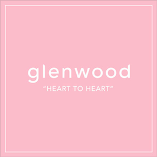

glenwood "HEART TO HEART"
by 長谷川 潤
モデルやタレントとしても活躍する長谷川潤が、 毎回豪華なゲストと共に対談するトークショー。
GiGs media
by 長谷川 潤
モデルやタレントとしても活躍する長谷川潤が、 毎回豪華なゲストと共に対談するトークショー。

by 長谷川 潤
国立天文台の縣秀彦先生を迎えた後半。日本が誇る探査機「はやぶさ２」の話題から、月の話、星空の話、地球に似た惑星の話、最後は宇宙人の話題まで、天文にまつわるあれこれを国立天文台の縣秀彦先生に聞きます。
The StartUp
“新卒切符“を捨て、起業家として生きることを選んだ2人が東京という地で奔走するリアルタイム起業ドキュメンタリー。
配信者：GiGs originals

GraveTalk /グレイブトーク
イラスト/デザイン/ウェブと多方面でクリエイティブな活動をしているTocinmash死不谷優が、毎回ゲストを招き、とあるテーマについてディープなトークを繰り広げる。
配信者：Tocinmash

墓場のラジオSeason2
Tocinmashの真骨頂。ノブちゃん、ケンちゃん、シブちゃんの3人が織りなすテンポ良いトークにあっという間の30分になること間違いなし。
配信者：Tocinmash

PillowTalk
1年間のセックスレスから抜け出し、文字通りゼロからのセックスライフを送ろうとしているマイヤ。そんな彼女が愉快なゲストとともにリアルすぎる赤裸々トークを、ゆるくポップにお届け。
配信者：マイヤ

by 長谷川 潤
今年はアポロ11号の月面着陸から50年、ハワイ島のすばる望遠鏡ができてから20年、国際天文学連合発足から100年という天文のメモリアルイヤー。最近話題のブラックホールはどれくらいあるのか、研究者はどんな方法で調べているのかなど、宇宙の不思議を国立天文台の縣秀彦先生に聞きます。
by 長谷川 潤
最近よく耳にはするけれど、本当の意味がなかなかわからない「エシカル」という言葉。 今回は「エシカル協会」を自ら立ち上げた元ミステリーハンター・末吉里花さんと「エシカル」を一から考えます。
by 長谷川 潤
ドクターデニムこと本澤裕治さんと、デニムを愛しすぎて丸ごとジーンズのスタイルブックを出版することになったスタイリスト百々千晴さん、２人のDenim geeksと長谷川潤がジーンズ愛を語ります
by 長谷川 潤
長谷川潤が「基本」から知りたいテーマを専門家に聞く「101シリーズ」の１回目。「水がなくなる日」などの著書がある水ジャーナリストの橋本淳司さんに世界の水事情や生活に役立つ水の活用方法を聞きました。
by 長谷川 潤
水原希子さんをゲストに迎えた後半。アジアの様々な地域に活動の場を広げたことで水原さんが気づいたこと、自身が手がけたブランド「OK」について、ネガティブパワーとの向き合い方、今後の夢についてなど、今回も盛りだくさん。明日を生きるヒントが詰まっています。North Starを探しているあなたへのアドバイスも！
by 長谷川 潤
モデル・女優として活躍する水原希子さんがゲスト。 水原さんを変えた一人旅、映画「ノルウェイの森」をはじめとする 女優の仕事についてなど、様々なエピソードを通して、 North Starに向かう水原さんのパワーの源を探ります。
by 長谷川 潤
料理人の野村友里さんがゲスト。 料理上手、おもてなし上手なお母さんの技を受け継いで 自身の居場所を見つけたという野村さん。 野村さんが料理を通して伝えて行きたいことは？ おもてなしが上手にできない…という長谷川潤への アドバイスや、すぐに作れるお料理のヒントももらいました。
by 長谷川 潤
ラジオやテレビのMCとして活躍中のシャウラをゲストに迎えた後半。 故郷を離れ、東京で一緒に過ごした20代----失敗、支え合った時間、人生のターニングポイント、今だからわかる思い違い、 そんなたくさんの思い出を振り返りながら、 ２人の“Growing pains”を語ります。
by 長谷川 潤
モデルとして日本でのキャリアをスタートし、現在はラジオやテレビのMCとして活躍中のシャウラが今回のゲスト。同じ年で同じハワイ出身、ViVi時代から苦楽を共にしてきたシャウラと長谷川 潤が、お互いの“Growing pains”について語ります。
by 長谷川 潤
日本における精油ブレンディングの第一人者・アネルズあづささんとのトーク、後半。香りが脳に与える影響や、女性が大変な時期を助けてくれる香りの話、セラピストとの上手な付き合い方など様々な角度から香りのパワーを借りて 生きるノウハウを探ります。 自分にぴったりのブレンドを作ってもらうデモンストレーションも！
by 長谷川 潤
「香り」を使って女性の毎日を支えるアネルズあづささん。 ドューラとしても長谷川潤を支えてくれたあづささんと、 出産の思い出を振り返りながら、アロマセラピーの魅力を語ります。
by 長谷川 潤
『人生がときめく片づけの魔法』の著者・近藤麻理恵さんと語り合う「SPARK JOY」シリーズの後半。片づけが苦手というスタッフのリアルな声も交えつつ「こんまりメソッド」を深く探っていきます。正しい片づけで、輝く明日を一緒に手に入れましょう。
by 長谷川 潤
断捨離とは一味違う「人生がときめく」片付け。長谷川潤の人生を変えた本「SPARK JOY（人生がときめく片づけの魔法）」の著者・近藤麻理恵さんと、その独自のメソッドの魅力について、とことん語りあいます。
by 長谷川 潤
自分らしさを取り戻すための方法のひとつに「瞑想」があります。長谷川潤も生活に取り入れている「瞑想」の恵みと活用法について、TM(Transcendental Meditation)の水谷洋子さんと語ります。
by 長谷川 潤
自分らしく素敵に歳を重ねるにはどうしたらいい？ 長谷川潤が日々「美」に携わっているプロフェッショナルと対談する「Aging gracefully」シリーズ。ラストを飾る3回目は、スタイリストの亘つぐみさんが登場。現在57歳のつぐみさんがなぜいつまでも美しいのか、その秘密がわかります。
by 長谷川 潤
自分らしく素敵に歳を重ねるにはどうしたらいい？ 長谷川潤が日々「美」に携わっているプロフェッショナルと対談する「Aging gracefully」シリーズ。２回目はスタイリストの百々千晴さんが登場。２児の母として、そして仕事を頑張る女性として、毎日とどう向き合っているのか、今回もとことん語り合います。
by 長谷川 潤
自分らしく素敵に歳を重ねるにはどうしたらいい？長谷川潤が日々「美」に携わっているプロフェッショナルと対談する「Aging gracefully」シリーズ。１回目はヘアメイクアップアーティストの河北裕介さんが登場。15年来の付き合いだからこそのぶっちゃけトーク。今回もとことん語り合います。
by 長谷川 潤
親友MINMIと語り合う「vulnerability」シリーズの後半。「vulnerability」を乗り越えたエピソード、自分の本当の気持ちの探し方、この番組への思い…今回もとことん語り合います。
by 長谷川 潤
誰もが持っている「Vulnerability」。この「vulnerability」ってどんなもの？どうやって向き合っていけばいい？親友MINMIと、とことん自由に語り合います。